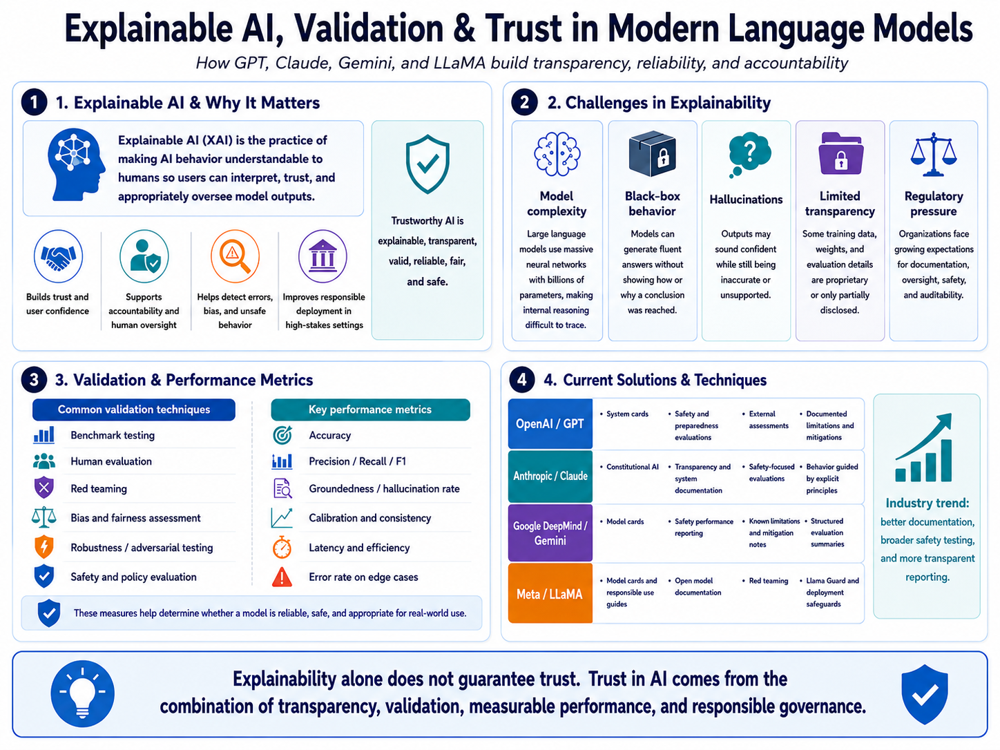

Workshop 4.4 · Explainable AI
Explainable AI, Validation & Trust
This artifact presents a visual explanation of how explainable AI, validation techniques, performance metrics, and responsible governance help build trust in modern language models such as GPT, Claude, Gemini, and LLaMA.
Visual Artifact
The infographic explains why transparency matters in modern AI systems. It connects the importance of explainable AI with common challenges, validation methods, performance metrics, and current industry techniques used to improve trust and accountability.

Description
This artifact focuses on the challenge of making AI decisions understandable, especially in large language models. Models such as GPT, Claude, Gemini, and LLaMA can produce useful and fluent responses, but their internal reasoning processes are often difficult to inspect or explain. This creates challenges for users, developers, organizations, and regulators who need confidence that AI systems are reliable, fair, safe, and accountable.
The visual artifact highlights four connected areas: why explainability matters, what makes explainability difficult, how validation and performance metrics assess reliability, and how leading AI organizations are improving transparency through documentation, safety testing, red teaming, model cards, system cards, and responsible deployment practices.
Objective
The objective of this artifact is to explain how transparency, validation, and performance measurement contribute to trustworthy AI. The artifact identifies key obstacles such as model complexity, black-box behavior, hallucinations, limited transparency, and regulatory expectations, then shows how validation methods help assess whether a model is reliable enough for real-world use.
Process
I started by researching explainable AI and current industry practices used by leading AI organizations. I focused on models and organizations such as GPT from OpenAI, Claude from Anthropic, Gemini from Google DeepMind, and LLaMA from Meta. I then grouped the research into four major themes: importance, challenges, validation methods, and current explainability techniques.
After organizing the content, I designed the artifact as a structured infographic. The layout moves from the reason explainability matters, to the barriers that make it difficult, to the validation techniques that measure reliability, and finally to industry solutions that support transparency and accountability. This structure helps show the relationship between AI explainability, model evaluation, and responsible deployment.
Tools and Tech Used
- GitHub Pages
- HTML
- CSS
- JavaScript
- ChatGPT
- Explainable AI research
- AI governance concepts
- Validation and performance metrics
- Model cards and system card documentation
Industry Examples
The artifact includes examples from OpenAI, Anthropic, Google DeepMind, and Meta. These organizations use different approaches to improve explainability and accountability, including system cards, model cards, safety evaluations, red-team testing, policy evaluations, responsible use guidance, and deployment safeguards.
These examples show that explainability is not a single technique. It is a broader practice that combines documentation, evaluation, monitoring, human oversight, and responsible governance. Together, these practices help organizations communicate what AI systems can do, where they may fail, and how their risks can be reduced.
Value Proposition
This artifact makes responsible AI concepts easier to understand by connecting explainability with validation and measurable performance. Instead of only focusing on model capability, the artifact shows that trust in AI depends on transparency, testing, documentation, and accountability.
The unique value of this artifact is that it presents AI trust as a full lifecycle concern. It shows that explainable AI is not only about interpreting a model's output, but also about evaluating the system before deployment, documenting limitations, monitoring behavior, and ensuring that humans can responsibly oversee AI use.
Reflection
This assignment helped me understand that explainability is one of the most important challenges in modern AI development. Large language models can generate strong results, but their complexity makes it difficult to fully understand how outputs are produced. This creates a need for stronger validation methods, better documentation, and clearer accountability practices.
One of my biggest takeaways was that validation and performance metrics are essential to responsible AI. Accuracy, precision, recall, F1 score, hallucination testing, robustness testing, fairness evaluation, red teaming, and human review all provide different forms of evidence about whether a model is reliable and appropriate for use.
This artifact strengthened my understanding of AI governance and responsible deployment. It also expands my portfolio beyond model structure and model training by showing that trustworthy AI requires transparency, measurement, safety evaluation, and ongoing oversight.
References
National Institute of Standards and Technology. (2023). AI Risk Management Framework. https://airc.nist.gov/airmf-resources/airmf/
OpenAI. (2024). GPT-4o system card. https://openai.com/index/gpt-4o-system-card/
Anthropic. (n.d.). Claude system cards. https://www.anthropic.com/system-cards
Google DeepMind. (n.d.). Gemini model cards. https://deepmind.google/models/model-cards/
Meta AI. (2024). Our responsible approach to Meta AI and Meta Llama 3. https://ai.meta.com/blog/meta-llama-3-meta-ai-responsibility/
OpenAI. (2026). ChatGPT [Large language model]. https://chatgpt.com/